Drag a corner or tap a page to turn it
Lane Zhu
A Literary Journey Through Xiangxi
Following Shen Congwen through Xiangxi
A Literary Journey Through Xiangxi
Following Shen Congwen’s footsteps through Xiangxi
Words and photographs by
Lane Zhu

Always on the move, whether by coach or speedboat. Every moment seems to cry out, “On the road.”
Outside the window, the land, divided into plots, runs backwards, sweeping dilapidated factories and scattered low houses along with it. The world in winter has no colour. Nearly half the trees are bare; some do not even have branches, only trunks standing straight, like white or black thorns in the earth. Across a thousand mountains, not a bird in flight. Only the crop stalks burning in the fields, clusters of vivid red leaping across the vast, distant land, their glow merging into one, like a sun grown from the earth. All this bleakness tells me: this is Xiangxi.
I have come here, come to this village veiled in mist, this county town in Hunan. In my earphones, Liu Sen sings rock: “There’s no getting by without county towns.” The coach passes battered billboards, passes smoking wheat fields, passes Sisters Restaurant, Sichuan Girl Supermarket, Huichuntang Clinic. The world flows quietly past me. I feel a sudden knock against my heart, an emotion I cannot explain. Perhaps this is merely curiosity about, and a yearning for, the aesthetics of county towns, an urge to escape the city. I imagine all the stories unfolding here: the stagnation and development, the leaving and returning. I feel drawn to the lives lived here in a way I cannot quite explain.
When I step off the coach, cold air rushes into my nostrils without warning. Having been abruptly woken, I have a dull ache in my head. I suddenly realise how accustomed I have become to the convenience of travel, to closing my eyes and opening them at my destination. Only a starting point and a destination; not a blade of grass or a single tree along the way will be remembered.
Fortunately, the journey is beginning, and I try to feel everything I encounter.
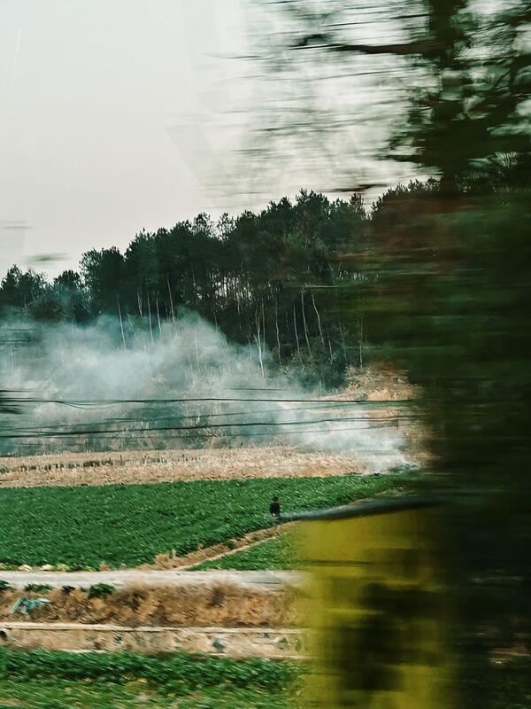
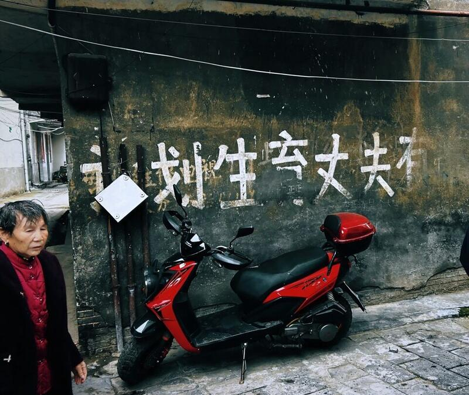
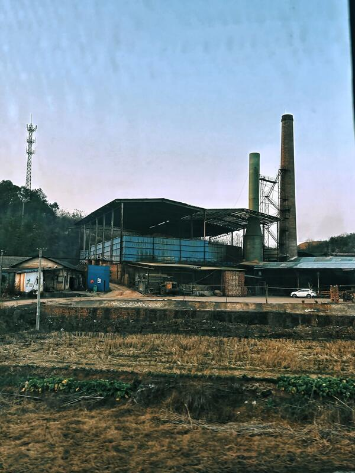


Kuafu Mountain Village!
We follow the mountain roads through one sharp turn after another, rushing past rapeseed that blankets the hills.Rust-covered machinery struggles endlessly with the weeds, humming. The coach suddenly swings round, making the scarecrows dizzy from every direction.
The mountain air is fresh. The tallest structures are chimneys, not the Shanghai Tower. We walk a long way to visit a former boat tracker. Along the way, pomelos float in a pond. There are animals too. Dogs and chickens stand stock-still, so motionless they could almost be statues. The houses in the village are old and new, with an awkward discord between them. The new houses bring hope; outdoor air-conditioning units lean beside barred windows, and even the 5G signal shows full bars. It is a kind of happiness that comes with modernisation. And I look this way and that, searching for traces of an older era. They are few and hide themselves in every possible way, but I still catch glimpses of them in the words of the boat tracker, who is now a forest ranger. Steam rises from the tea. As we peel oranges from the mountains, a fine spray rises from their skins, mingling with the steam as his voice drifts through it. He talks about the old days, how the eddying currents in the mountain hollows swallowed boats and timber rafts whole. The floodwaters still rise now, but they are no longer as dangerous as before, and so on. Through the haze, I look intently at the furrows in his face and at those eyes. I understand that the former are changes left by time washing past; as for the latter, perhaps time has only added to their brightness.
Shen Congwen once said that the people of Xiangxi seem to have nothing to do with history, that a hundred years ago or a hundred years from now, they would seem much as they do today. He also said that as history develops, people’s thoughts and feelings develop with it, and everything must still “move” and “change.”
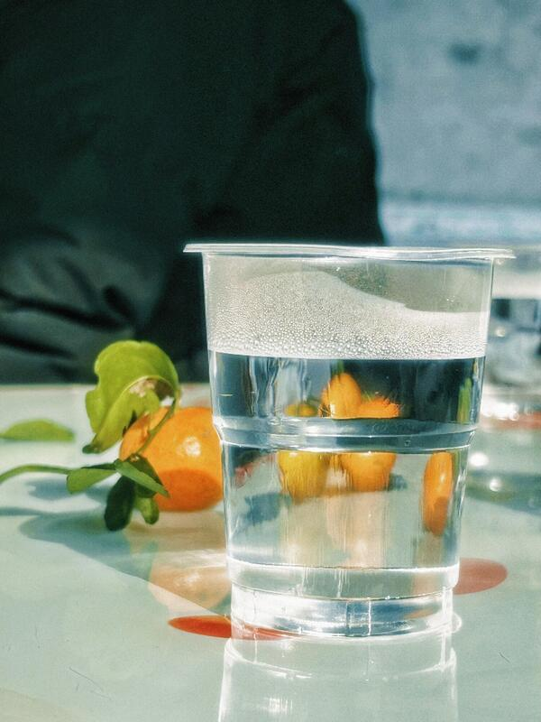
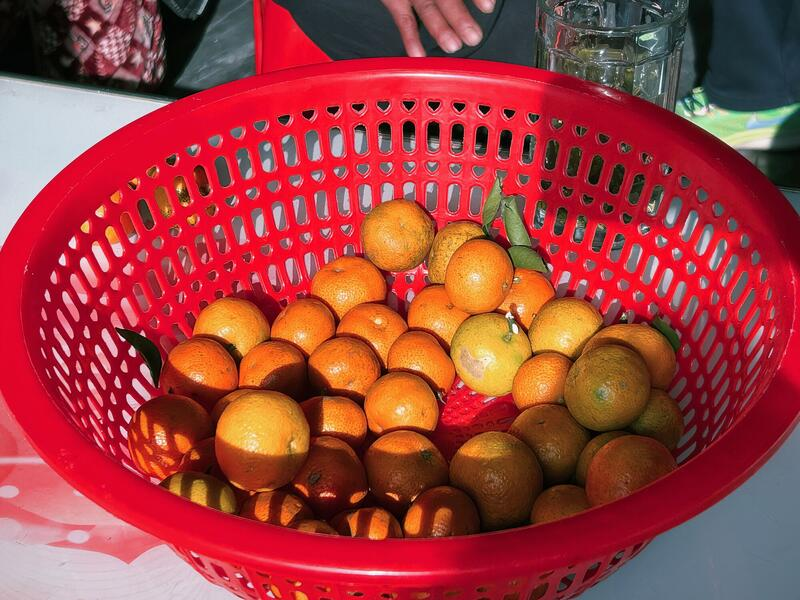
He is probably right. I feel the changes in Xiangxi, the enormous changes. I see scenes entirely different from those in Border Town: brightly printed signs, Jordan trainers drying on the steps of houses. But there are things that remain unchanged: those eyes, for instance; the cattle ambling across the road; the places set aside for worship at the entrance to every home, each bearing the same words, “Heavenly Family,” whether the ground beneath is earth or concrete. For centuries, the people of Xiangxi have “lived faithfully and solemnly, shouldering their own share of fate, for themselves, for their children.” So even if the scarecrows here put on hiking jackets, inside they still have bodies bound from straw. That Xiangxi, pure as the waters of spring—I search for it, lose myself in it.
Afterwards, we climb the mountain. Climbing Mount Kuafu is not very different from climbing the mountains of Yunnan or Chongqing: the same man-made bluestone slabs. Wind glances down through gaps between the leaves in the woods, carrying the chill of winter. The cold wind scatters the sun’s faint warmth, leaving the stone steps and people’s faces bathed in soft light, as though captured on film.
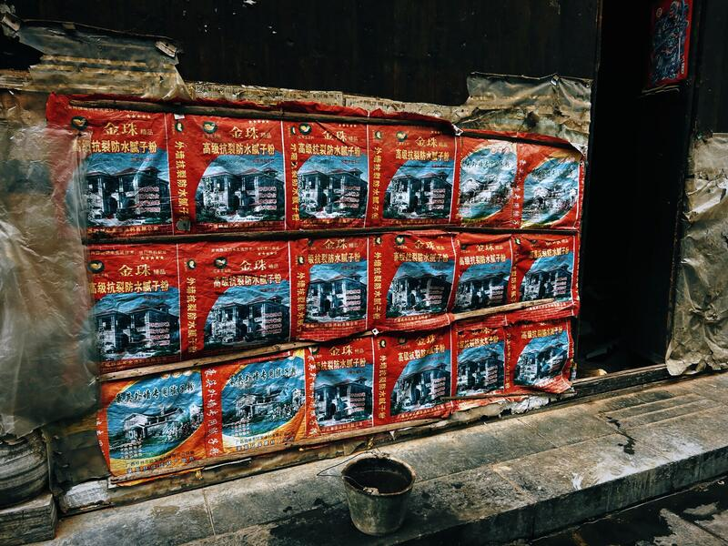
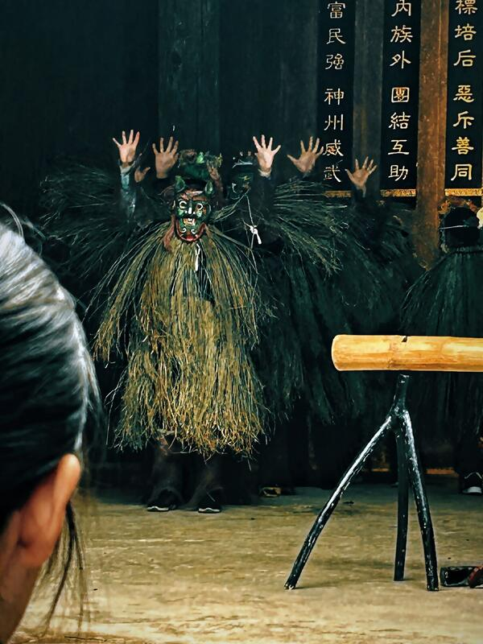
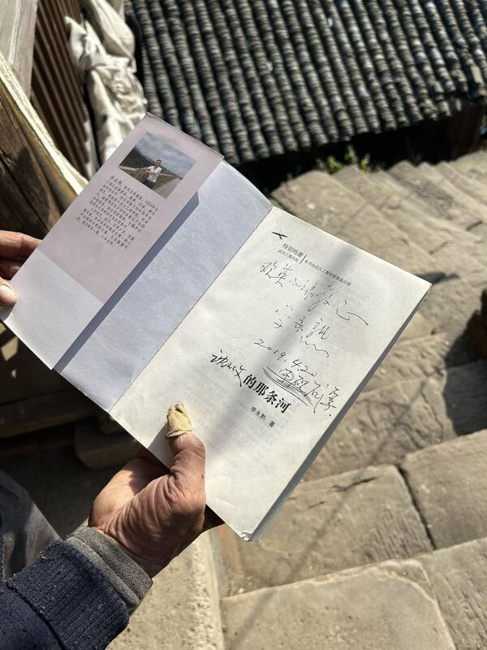
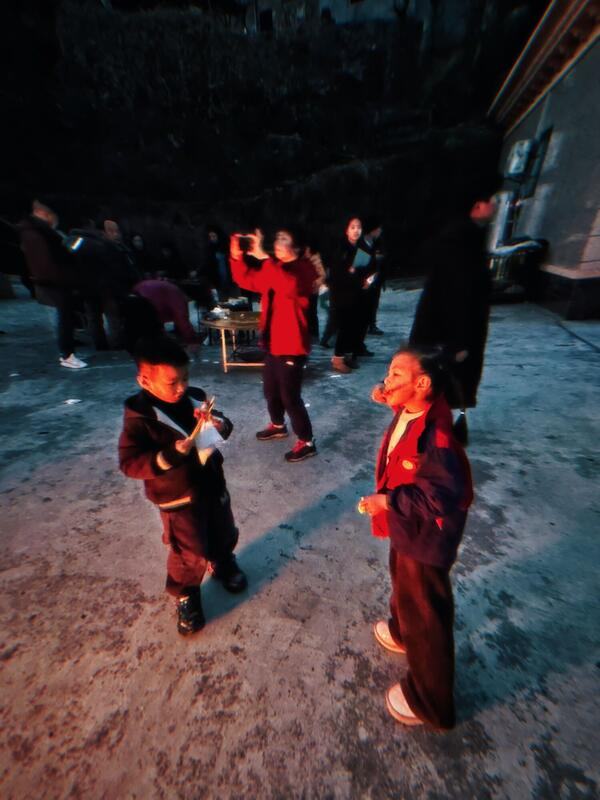
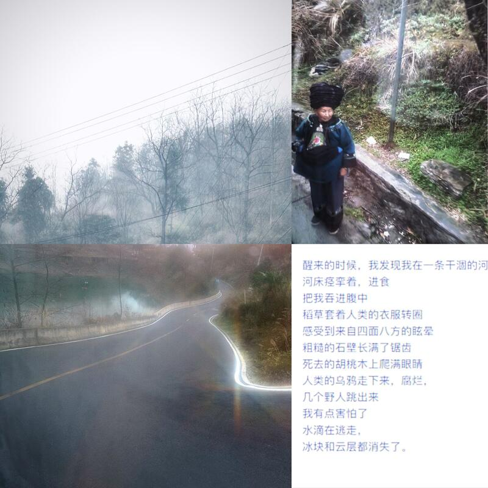
Off to Miaoren Valley!
A sudden chill. White mist takes over the entire window. Looking out, I see trees dimly outlined, flickering mysteriously. In the mountains, lanterns hang from bamboo, red and green colliding; a No Parking sign is planted at an angle in the grass. The road twists and turns. The coach hugs the edge as it makes precarious turns, seeming just short of plunging into the river with everyone on board, leaving the passengers uneasy. As we draw near, I see an elderly woman in Miao dress, small in stature, her hair wrapped high in a long cloth of pure black. Her clothing is a navy blue unlike that seen in portrait studios, and she wears a small silver ornament on her chest. Does she know gu sorcery? She really looks as though she does. And so, from that one glimpse, I feel quite certain I am already deep inside a Miao village.
Our guide explains the trees with phoenix scales, leads us into a forest that only the most respected could once enter, tells us of an elder’s dream beneath the afternoon glare, worship, new shoots, birds building nests, life. Even now, the only evidence for all these stories is a stone statue and an altar. So what of the mysteries? Those secret arts of Xiangxi have become legends, become tourist gimmicks, even if people come here and find nothing at all.
Once again, I look towards Xiangxi. A Miao auntie in traditional dress gives her commentary through a microphone; LED lights decorate the old stilt houses; push open a wooden door that reeks of money, and inside is a bar pulsing with music. Ancient legends, young faces…
I try to feel all of this. I hear time breathing.
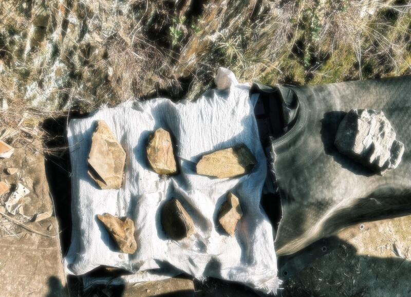
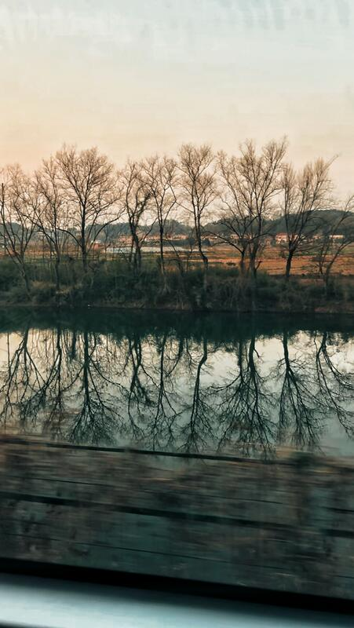
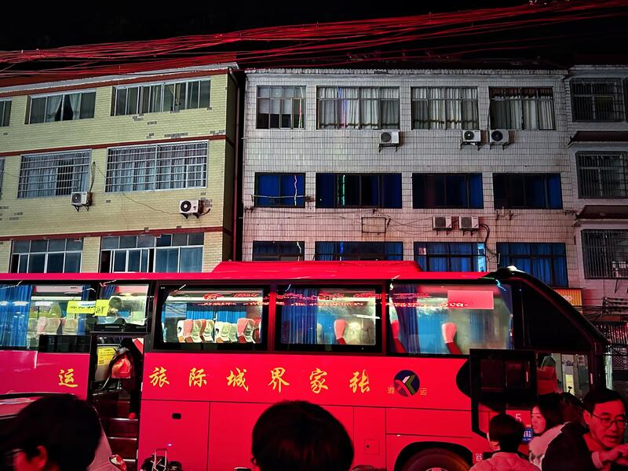
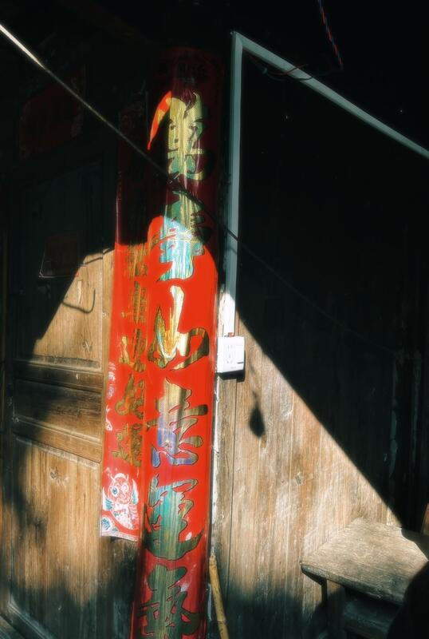
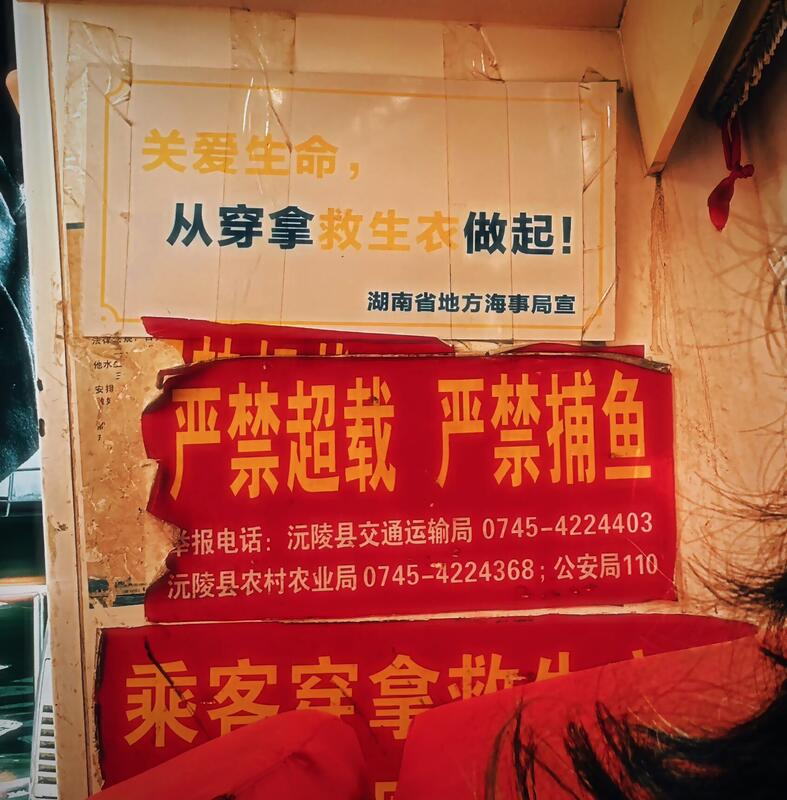
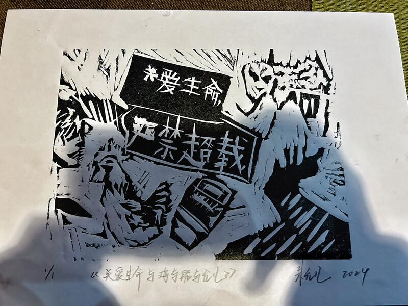
Written and photographed in Xiangxi, Hunan,
on the road with Shen Congwen’s books.
Lane Zhu
A Literary Journey Through Xiangxi
Following Shen Congwen through Xiangxi
A Literary Journey Through Xiangxi
Following Shen Congwen’s footsteps through Xiangxi
Words and photographs by
Lane Zhu
Always on the move, whether by coach or speedboat. Every moment seems to cry out, “On the road.”
Outside the window, the land, divided into plots, runs backwards, sweeping dilapidated factories and scattered low houses along with it. The world in winter has no colour. Nearly half the trees are bare; some do not even have branches, only trunks standing straight, like white or black thorns in the earth. Across a thousand mountains, not a bird in flight. Only the crop stalks burning in the fields, clusters of vivid red leaping across the vast, distant land, their glow merging into one, like a sun grown from the earth. All this bleakness tells me: this is Xiangxi.
I have come here, come to this village veiled in mist, this county town in Hunan. In my earphones, Liu Sen sings rock: “There’s no getting by without county towns.” The coach passes battered billboards, passes smoking wheat fields, passes Sisters Restaurant, Sichuan Girl Supermarket, Huichuntang Clinic. The world flows quietly past me. I feel a sudden knock against my heart, an emotion I cannot explain. Perhaps this is merely curiosity about, and a yearning for, the aesthetics of county towns, an urge to escape the city. I imagine all the stories unfolding here: the stagnation and development, the leaving and returning. I feel drawn to the lives lived here in a way I cannot quite explain.
When I step off the coach, cold air rushes into my nostrils without warning. Having been abruptly woken, I have a dull ache in my head. I suddenly realise how accustomed I have become to the convenience of travel, to closing my eyes and opening them at my destination. Only a starting point and a destination; not a blade of grass or a single tree along the way will be remembered.
Fortunately, the journey is beginning, and I try to feel everything I encounter.
无时无刻都在赶路，无论是大巴车还是快艇，每时每刻都叫嚣着“在路上”。
车窗外，被分割成一块块的土地向后奔跑，卷携着破败的工厂，以及低矮的点点房屋。冬天的世界是没有色彩的。近半的树木一片光秃，有些甚至没有枝条，只剩主干笔直挺立，像大地上的一根根白色或黑色的刺。千山鸟飞绝。只有田间的燃烧的秸秆，丛丛的鲜红在旷远土地上跳动着亮成一片，像生长出的太阳。一切的苍凉告诉我，这里是湘西。
我来到这里，来到这带着雾气的村庄，湖南的县城。耳机里，刘森唱着摇滚：“没有县城万万不能。”汽车驶过破旧的广告牌，驶过冒着烟的麦田，驶过姐妹餐厅、川妹超市、回春堂诊所，世界在我身边静静流淌。我觉得心脏被忽地敲击，情绪莫名。这或仅仅是对县城美学的好奇与向往，一种逃离城市的冲动。我想象此处发生的一切故事，这里的停滞与发展，逃离又回归，带着一种难以说明的人文情感。
走下大巴时，冷空气猝不及防地窜进鼻腔，因为突然被叫醒，头闷闷得痛。突然发现自己早已习惯了眼睛一睁一合就到达目的地的便利交通，只有起点和目的地，路过的一草一木都不会被记得。
所幸旅程开始，我努力去感受遇到的一切。
Kuafu Mountain Village!
夸父山村！
Kuafu Mountain Village!
We follow the mountain roads through one sharp turn after another, rushing past rapeseed that blankets the hills.Rust-covered machinery struggles endlessly with the weeds, humming. The coach suddenly swings round, making the scarecrows dizzy from every direction.
The mountain air is fresh. The tallest structures are chimneys, not the Shanghai Tower. We walk a long way to visit a former boat tracker. Along the way, pomelos float in a pond. There are animals too. Dogs and chickens stand stock-still, so motionless they could almost be statues. The houses in the village are old and new, with an awkward discord between them. The new houses bring hope; outdoor air-conditioning units lean beside barred windows, and even the 5G signal shows full bars. It is a kind of happiness that comes with modernisation. And I look this way and that, searching for traces of an older era. They are few and hide themselves in every possible way, but I still catch glimpses of them in the words of the boat tracker, who is now a forest ranger. Steam rises from the tea. As we peel oranges from the mountains, a fine spray rises from their skins, mingling with the steam as his voice drifts through it. He talks about the old days, how the eddying currents in the mountain hollows swallowed boats and timber rafts whole. The floodwaters still rise now, but they are no longer as dangerous as before, and so on. Through the haze, I look intently at the furrows in his face and at those eyes. I understand that the former are changes left by time washing past; as for the latter, perhaps time has only added to their brightness.
Shen Congwen once said that the people of Xiangxi seem to have nothing to do with history, that a hundred years ago or a hundred years from now, they would seem much as they do today. He also said that as history develops, people’s thoughts and feelings develop with it, and everything must still “move” and “change.”
夸父山村！
我们追赶着一条条痉挛的山路，漫山遍野的油菜被匆匆掠过。布满铁锈的机器和野草缠斗不休，嗡嗡作响，车子猛地转了个圈，让稻草人感受到四面八方的眩晕。
山间空气清新，最高的建筑物是烟囱，不是上海中心。走了很长的路，去拜访曾经的纤夫。沿途，有柚子漂浮在池塘里，还有动物。狗和鸡定定站着，一动不动几乎让人以为是雕像。村里房屋新旧不一，有种生涩的不协调。新房给人带来希望，空调外机依靠在防盗窗旁边，连5G信号都是满格的。那是一种现代化的幸福。而我东张西望，寻觅着旧时代的印记。它们数量不多，又百般藏匿，但我依然从已经成为护林员的纤夫口中窥得一二。茶水热气腾腾，山上橘子剥开溅起的丝丝水汽，晕开袅袅话音。他讲以前，山坳中的回水把船和木筏都吞噬干净，现在洪水依然涨，不过不似过去凶险云云。朦胧中我凝神看着他脸上的沟壑和那双眼，我明白前者是时间冲刷过去带来的改变，至于后者，时光也许只是增益了它们的神采。
沈从文曾说，湘西的人似乎与历史毫无关系，说他们百年前或百年后皆仿佛同目前一样，又说历史在发展的同时人的思想情感在发展，一切还是要“动”和“变”。
He is probably right. I feel the changes in Xiangxi, the enormous changes. I see scenes entirely different from those in Border Town: brightly printed signs, Jordan trainers drying on the steps of houses. But there are things that remain unchanged: those eyes, for instance; the cattle ambling across the road; the places set aside for worship at the entrance to every home, each bearing the same words, “Heavenly Family,” whether the ground beneath is earth or concrete. For centuries, the people of Xiangxi have “lived faithfully and solemnly, shouldering their own share of fate, for themselves, for their children.” So even if the scarecrows here put on hiking jackets, inside they still have bodies bound from straw. That Xiangxi, pure as the waters of spring—I search for it, lose myself in it.
Afterwards, we climb the mountain. Climbing Mount Kuafu is not very different from climbing the mountains of Yunnan or Chongqing: the same man-made bluestone slabs. Wind glances down through gaps between the leaves in the woods, carrying the chill of winter. The cold wind scatters the sun’s faint warmth, leaving the stone steps and people’s faces bathed in soft light, as though captured on film.
他大抵是对的。我感受到湘西的变，巨大的变，我看到了与《边城》中全然不同的景象：印刷鲜艳的告示牌，房屋台阶上晒着的乔丹牌运动鞋。但其不变者，比如那双眼睛，比如晃晃悠悠过马路的牛群，每家每户门口的祭拜场地，贴着一样的“天国家人”，不论脚下是泥土还是水泥地。千百年来，湘西人“忠实庄严的生活，担负了自己那份命运，为自己，为儿女”。所以，就算这里的稻草人披上了冲锋衣，它内里还是草扎的身体。那个纯如春水的湘西，寻找着，陶醉其间。
之后我们爬山。爬夸父山，与爬云南、重庆的山无太大区别，一样的人造青石板。风从林中叶片缝隙瞥扫下来，带着冬日的寒凉。太阳的微暖被冷风搅散，只是为石阶人脸铺上胶片似的柔光。
Off to Miaoren Valley!
A sudden chill. White mist takes over the entire window. Looking out, I see trees dimly outlined, flickering mysteriously. In the mountains, lanterns hang from bamboo, red and green colliding; a No Parking sign is planted at an angle in the grass. The road twists and turns. The coach hugs the edge as it makes precarious turns, seeming just short of plunging into the river with everyone on board, leaving the passengers uneasy. As we draw near, I see an elderly woman in Miao dress, small in stature, her hair wrapped high in a long cloth of pure black. Her clothing is a navy blue unlike that seen in portrait studios, and she wears a small silver ornament on her chest. Does she know gu sorcery? She really looks as though she does. And so, from that one glimpse, I feel quite certain I am already deep inside a Miao village.
Our guide explains the trees with phoenix scales, leads us into a forest that only the most respected could once enter, tells us of an elder’s dream beneath the afternoon glare, worship, new shoots, birds building nests, life. Even now, the only evidence for all these stories is a stone statue and an altar. So what of the mysteries? Those secret arts of Xiangxi have become legends, become tourist gimmicks, even if people come here and find nothing at all.
Once again, I look towards Xiangxi. A Miao auntie in traditional dress gives her commentary through a microphone; LED lights decorate the old stilt houses; push open a wooden door that reeks of money, and inside is a bar pulsing with music. Ancient legends, young faces…
I try to feel all of this. I hear time breathing.
去苗人谷！
骤冷，白色的雾占领了整个车窗，向外看，林木影影绰绰，神秘地闪烁着。山里竹子上挂着灯笼，红色绿色撞在一起，禁止停车的告示牌斜斜地插在草地里。道路七拐八绕，大巴挨着路沿险险转弯，似乎差一点就要连车带人冲进江水，搞得乘客惶惶不安。快到时看见一位苗族装束的老妇人，身量矮小，头发却被纯黑色长巾绕缠得很高，衣衫是不同于写真馆里的藏青色，胸前佩戴了一小块银饰。她会蛊术吗？看上去真像。于是就这一眼，我便笃定地觉得自己已然深入苗寨了。
向导为我们讲解长着凤鳞的树，带我们走入曾经只有德高望重者才能踏进的林中，告诉我们午后炫光下长老做的梦，祭拜，新芽，鸟筑巢，生命。直到现在一切故事的证据只有一个石像与祭坛。所以那些神秘的呢，那些湘西秘术变成了传说，成了旅游的噱头，即使人们来到这里发现什么都没有。
再一次地，我望向湘西。穿着传统服饰的苗族阿姨带着麦克风讲解，古朴的吊脚楼上装饰了LED灯，推开带着铜臭的木门里面是动感酒吧。古老的传说，年轻的脸庞……
我试图感受这一切， 我听到时间在呼吸。
Written and photographed in Xiangxi, Hunan,
on the road with Shen Congwen’s books.